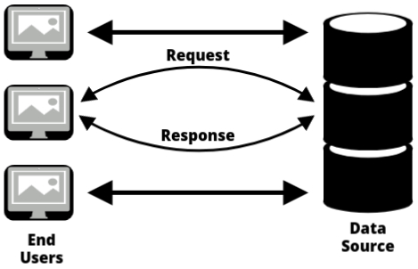

Data Warehouse Architecture
2-Tier Architecture
The 2-Tier Architecture is a client-server architecture commonly used in database systems, including data warehouses. In this setup, the system is divided into two layers: the client layer (end-user layer) and the server layer (data source layer). It is a simpler, faster architecture but has limitations when dealing with large-scale systems.
Key Features of 2-Tier Architecture
- Client-Server Architecture: In this model, the client (end-user) directly communicates with the server, where the data is stored and managed.
- Available Sources: The server layer may include sources like operational databases, external data systems, or an existing data warehouse.
- Not Expandable: This architecture is typically not expandable in terms of handling large numbers of end users or big datasets efficiently.
- Limited User Support: It struggles to support large numbers of concurrent users due to limited scalability.
- Easy to Maintain: As it has only two layers, maintenance is simpler and quicker compared to more complex architectures.
- Fast Communication: Direct communication between the client and server allows faster data transfer and response times.
How It Works
In a 2-Tier architecture, the client (end-user) sends a request to the server, which processes the request, retrieves the necessary data from the data source, and sends a response back to the client.
Example: A retail company’s data warehouse uses a 2-tier architecture. The sales team (client) directly queries the database (server) for daily sales data. The system processes the query and provides the requested data to the sales team.
Diagram of 2-Tier Architecture
1. End-User Layer: This represents the clients (end-users) who request information from the system.
2. Server Layer: The server processes the client’s request and interacts with the data source (data warehouse or database) to retrieve the necessary data.
Example scenario: A manager (end-user) requests a sales report. The client sends a query to the server. The server queries the database for the required data and returns the report to the manager.
The 2-tier architecture is ideal for smaller systems that do not require handling a large number of concurrent users or complex data. It is easy to implement, provides fast communication, and is simple to maintain. However, it is not expandable and does not support large-scale data processing, making it unsuitable for organizations that need to scale up.
- Best for: Small to medium-sized systems with limited data volume and user traffic.
- Not ideal for: Large-scale systems with complex data or a large number of users.
3-Tier Architecture
The 3-Tier Architecture is one of the most widely used architectures in data warehousing. It divides the system into three distinct layers: the bottom tier (Database), the middle tier (OLAP Server), and the top tier (Client Layer). This architecture is designed to provide a scalable, efficient solution for handling large volumes of data and numerous end-users.
Key Features of 3-Tier Architecture
- Most Widely Used: The 3-tier architecture is the most common setup for enterprise-level data warehouses because it provides scalability, flexibility, and supports large-scale data operations.
- Separation of Concerns: It separates data management, business logic, and user interaction into distinct layers, making the system more organized and easier to maintain.
- Scalability: The architecture can handle a growing number of users and increasing data volumes efficiently.
- Flexibility: Each tier can be optimized independently for performance and scalability.
How It Works

In a 3-tier architecture, data flows through three layers:
1️⃣ Bottom Tier: Database (RDBMS)
The bottom tier is where the data resides. It is typically a relational database management system (RDBMS) like Oracle, SQL Server, or MySQL. In this layer, raw data is cleaned, transformed, and loaded (ETL process) before being stored for analysis.
- Data Cleaning: The raw data is cleaned to remove inconsistencies.
- Data Transformation: The data is transformed into a consistent format for analysis.
- Data Storage: After cleaning and transformation, the data is stored in tables or other structures for efficient querying.
Example: A company’s sales data, after being cleaned (removing invalid entries like incorrect transaction dates) and transformed (standardizing the format), is loaded into the database for analysis.
2️⃣ Middle Tier: OLAP Server
The middle tier is the OLAP (Online Analytical Processing) server, which is responsible for performing business logic and processing queries. The OLAP server provides multidimensional analysis capabilities, allowing users to perform complex queries efficiently.
- Business Logic: This layer applies rules and logic for aggregating and transforming data according to business needs.
- Multidimensional Analysis: The OLAP server enables data to be analyzed across different dimensions, like time, geography, and product categories.
- Query Processing: It processes user queries quickly, using indexing and caching to speed up response times.
Example: A manager queries sales performance by region, time period, and product category. The OLAP server retrieves and aggregates the data from the database based on these dimensions.
3️⃣ Top Tier: Front-End Client Layer (Query Tools)
The top tier consists of front-end client tools that allow end-users to interact with the system. These tools are used for querying, reporting, and analysis. The front-end tools include tools like BI tools (Business Intelligence), reporting tools, and custom dashboards.
- User Interface: Provides a user-friendly interface for non-technical users to interact with the data.
- Query Tools: Allows users to run queries, generate reports, and visualize data.
- Access to OLAP Server: The client tools communicate with the OLAP server to fetch the processed data and present it to the user.
Example: A business analyst uses a reporting tool (like Tableau or Power BI) to visualize sales data by region and create interactive reports for management.
The 3-tier architecture provides a robust and scalable solution for large-scale data management and analysis. By separating the system into three layers, organizations can optimize each layer for its specific function, making the system efficient and flexible.
- Best for: Large organizations with complex data and multiple users requiring advanced analytical capabilities.
- Not ideal for: Small systems or organizations with limited resources.
4-Tier Architecture
The 4-Tier Architecture is a more advanced and flexible architecture used in data management and application development. It divides the system into four distinct layers: Database, Application, Presentation, and Client. This architecture allows for more separation of concerns, better scalability, and improved performance when dealing with complex systems.
Key Features of 4-Tier Architecture
- Increased Separation of Concerns: By adding the presentation layer and separating the business logic from the data access, it enables easier management of each component.
- Scalable: The architecture supports scaling up and down as needed by managing different layers independently.
- Flexible and Maintainable: Each layer can be developed and maintained independently, which makes it easier to implement changes without affecting the whole system.
- Enhanced Security: The layers are isolated, which can lead to improved security by limiting access to sensitive data.
How It Works
In the 4-Tier Architecture, the system is divided into four layers that interact with each other in a sequential flow:
1️⃣ Database Layer
The Database Layer is the bottom-most layer and holds the data for the system. This layer typically includes a relational database management system (RDBMS), where raw data is stored and managed.
- Data Storage: Raw data is stored in the database in a structured format.
- Data Access: This layer is responsible for providing data to the application layer through data access mechanisms.
- Data Integrity: Ensures that the data is accurate and consistent.
Example: A company’s employee records are stored in a database, including personal information, salary details, and job history.
2️⃣ Application Layer
The Application Layer is where the business logic is implemented. This layer acts as the intermediary between the database and the client, processing data and managing transactions.
- Business Logic: Handles the core functionality, processing user requests and ensuring that data is manipulated according to the business rules.
- Data Manipulation: This layer retrieves data from the database, processes it, and sends it to the presentation layer.
- Business Objects: Contains business-related data structures that are used to carry out specific business operations.
Example: The business logic could include rules for calculating employee bonuses based on performance, experience, and salary.
3️⃣ Presentation Layer
The Presentation Layer is the interface between the application and the end user. It is responsible for presenting data to the user and receiving input from the client (user).
- Controller: The controller receives the user input from the client, processes the data, and sends requests to the business logic layer for further processing.
- View: The view is responsible for rendering the data from the business logic layer in a format that the user can interact with, such as a web page or application screen.
- User Interface: The presentation layer provides the user interface, allowing users to interact with the system and make requests.
Example: A user views their employee information on a webpage. The controller sends a request to the business logic to fetch the necessary data, and the view displays the data on the screen.
4️⃣ Client Layer
The Client Layer is where the user interacts with the system. It is typically a user’s device (like a desktop, tablet, or smartphone) that communicates with the system to access the application.
- User Interaction: The client layer allows users to make requests and interact with the application through input forms, buttons, and other interface components.
- Communication with Presentation Layer: The client communicates with the presentation layer to submit queries and receive responses.
Example: A user opens a web browser and logs into the company’s HR portal, which is the client interacting with the application layers behind the scenes.
Diagram
- In the 4-Tier Architecture, when a user makes a request, it is first sent to the Presentation Layer where the Controller receives the request. The controller processes the request and forwards it to the Business Logic (or Business Objects) for further handling. From there, it moves to the Data Access Layer, where it fetches the relevant data from the Database. Once the data is retrieved, it is sent back to the Application Layer and passed to the Model, which processes it according to the business rules. Finally, the processed data moves back to the View in the Presentation Layer, where it is formatted and displayed to the user. This flow ensures that each layer performs its specific function, providing an organized, efficient process for data retrieval and presentation to the user.
The 4-tier architecture is an advanced, flexible approach to managing large, complex systems. By splitting the architecture into four distinct layers, it allows for better separation of concerns, scalability, and easier maintenance. It is ideal for applications that require high levels of performance, security, and user interaction.
- Best for: Large-scale enterprise applications, especially those requiring complex business logic and a high level of user interaction.
- Not ideal for: Small applications with less complex logic and limited user interaction.
Basic Walk-through of OLTP and OLAP
- Before diving into OLAP, we need to understand OLTP because they are two sides of the same coin. OLTP, or Online Transaction Processing, is what keeps businesses running daily; it’s the system that handles real-time transactions like bank transfers, hotel bookings, and product purchases on Amazon. Every time you buy something online, OLTP ensures your order is placed, the inventory updates, and your payment goes through instantly. These systems prioritize speed and efficiency, handling thousands (or even millions) of transactions every second. To maintain consistency and avoid duplication, OLTP databases are designed using a highly structured, normalized format.
- On the other hand, businesses don’t just need to process transactions; they also need to analyze them to make decisions. That’s where OLAP, or Online Analytical Processing, comes in. Instead of focusing on individual transactions, OLAP looks at data trends over time. Imagine Amazon wanting to analyze last year’s sales to understand which products were most popular, which regions had the highest demand, or how discounts affected revenue. This kind of in-depth analysis isn’t possible with OLTP because OLTP systems are designed for fast transactions, not complex queries. OLAP, in contrast, is optimized for analysis and stores data in a way that makes it easy to explore different angles; like total sales per month, per city, or even per product category. Instead of the strict, normalized structure of OLTP, OLAP databases are often denormalized to improve query performance.
- Since OLAP is all about analyzing large datasets, it supports different operations to make querying easier. If a company wants to see total sales at a higher level (like total sales per country instead of per city), they can use a roll-up operation. But if they want more details, they can drill down to see city-wise or even store-wise sales. Similarly, they can slice the data to focus on a particular time period or dice it to filter multiple dimensions at once (e.g., sales in 2023 for a specific product category). These operations help businesses get exactly the insights they need from their data.
- Now, OLAP itself comes in different types based on how data is stored. ROLAP (Relational OLAP) works directly with relational databases like SQL, allowing for flexible but slower queries. MOLAP (Multidimensional OLAP) stores data in precomputed OLAP cubes, making it much faster but requiring more storage. HOLAP (Hybrid OLAP) combines both approaches, keeping summary data in cubes for quick access while allowing more detailed analysis in relational tables when needed.
- The real reason businesses invest in OLAP is its ability to support decision-making. While OLTP is necessary for everyday transactions, it doesn’t help in strategic planning. That’s why companies use OLAP to study customer behavior, optimize pricing, and even predict future trends. Without OLAP, organizations would struggle to turn raw transaction data into meaningful insights.
- To make OLAP practical, different tools are used to query, visualize, and interpret the data. Some tools, like Tableau and Power BI, allow businesses to generate interactive reports. Others, like Excel PivotTables, help users analyze multidimensional data without needing technical expertise. Many modern OLAP systems now run on cloud-based platforms like Google BigQuery or AWS Redshift, allowing companies to analyze massive datasets in real-time over the internet.
- In short, OLTP and OLAP are both essential, but they serve different purposes; OLTP focuses on speed and accuracy in transaction processing, while OLAP is all about data analysis and business insights. They work together to help organizations run efficiently while also making informed decisions for the future.
OLTP
- OLTP (Online Transaction Processing) refers to systems that manage real-time transactions, like bank transfers or online shopping payments. These systems are designed to handle large numbers of quick transactions efficiently.
- The main focus of OLTP systems is to store, retrieve, and update data quickly. They ensure fast query processing (retrieving results quickly), maintain data integrity (keeping data accurate and consistent), and support multiple users accessing the same data at the same time.
- OLTP systems are responsible for handling the daily operations of an organization, such as booking a ticket, updating inventory, or processing a sale.
- Since these systems support simple database queries (basic search operations), the response time for any user action is very fast.
- They are characterized by a large number of short online transactions (like inserting, updating, or deleting records in a database).
Challenges of an OLTP system:
- Since multiple users can access and modify data at the same time, OLTP systems need concurrency control (a method to manage multiple requests without errors) and a recovery mechanism (a way to restore data in case of failure) to prevent issues like data conflicts or system crashes.
OLAP (On-Line Analytical Processing)
- OLAP is a category of software that helps analysts, managers, and executives gain insights into data by providing fast, consistent, and interactive access to information. This data is transformed from raw data into a more meaningful format that reflects the different aspects of a business, as understood by the user.
- OLAP is typically characterized by a relatively low volume of transactions (fewer, but more complex, data operations compared to OLTP systems).
- Queries in OLAP systems are often very complex and involve aggregations (combining data to get summaries, like total sales over a year). For OLAP systems, response time (how quickly the system gives results) is an important measure of how effective the system is.
- OLAP applications are commonly used with data mining techniques (methods to discover patterns and trends from large data sets) to analyze historical data and make predictions.
- In OLAP, data is stored in a multi-dimensional schema (a way of organizing data across multiple dimensions, like time, location, product). This schema is often a star schema (a simple structure where one central table is connected to multiple other tables, like a star). The data is usually aggregated (summarized) and historical, helping with trend analysis and decision-making.
OLAP Operations
OLAP operations help analyze data in different ways by allowing users to explore information from various angles. These operations make it easier to summarize data, look at detailed records, filter specific information, or rearrange data for better insights. Some common OLAP operations include Drill Down, Roll Up, Slice, Dice, and Pivot.
1: Drill Down
- Drill down is an operation that converts less detailed data into highly detailed data. In simple terms, it helps you go deeper into the data to see more specific details.
- It can be done in two ways:
- Moving down in the concept hierarchy (a structured way of organizing data, like going from a general level to a more specific level, such as from "Year" to "Quarter" to "Month").
- Adding a new dimension (introducing another factor to analyze, such as including "Region" along with "Time" for a more detailed view).
- For example, in the data cube shown below, the drill-down operation is performed by moving down in the time dimension; from "Quarter" to "Month," giving a more detailed breakdown of the data.
2: Roll Up
- Roll up is the opposite of the drill-down operation. Instead of going into more detail, it summarizes data at a higher level by combining smaller data points into a broader view.
- It performs aggregation (grouping and summarizing data, like calculating total sales for a year instead of showing sales for each month) on the OLAP cube.
- Roll up can be done in two ways:
- Climbing up in the concept hierarchy (moving from a detailed level to a broader level, such as from "City" to "Country").
- Reducing the number of dimensions (removing one or more factors from analysis to simplify the data view).
- For example, in the data cube shown below, the roll-up operation is performed by climbing up in the location dimension—moving from "City" to "Country" to get a higher-level summary of the data.
3: Dice
- Dice is an OLAP operation that selects a smaller portion of data from the OLAP cube by applying conditions on two or more dimensions (different factors of data, like time, location, or product).
- In simple terms, it creates a subcube (a smaller, filtered version of the main dataset) by focusing on specific values in multiple dimensions.
- For example, in the cube shown below, a subcube is selected based on the following criteria:
- Location = "Delhi" or "Kolkata"
- Time = "Q1" or "Q2"
- Item = "Car" or "Bus"
4: Slice
- Slice is an OLAP operation that selects data based on a single dimension, which results in the creation of a new subcube (a smaller portion of the data that focuses only on one specific value in a chosen dimension).
- In simple terms, it cuts out a specific section of data based on one condition while keeping the rest of the dimensions unchanged.
- For example, in the cube shown below, the slice operation is performed on the Time dimension, where Time = "Q1". This means the new subcube will only contain data related to the first quarter (Q1), filtering out all other time periods.